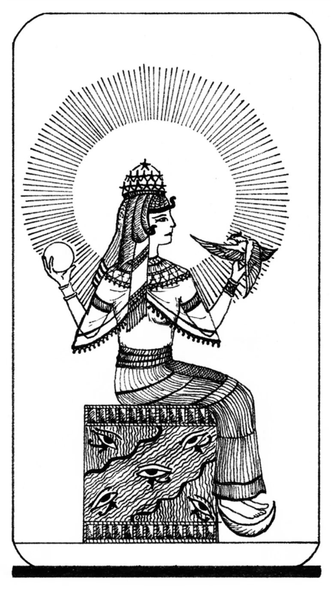
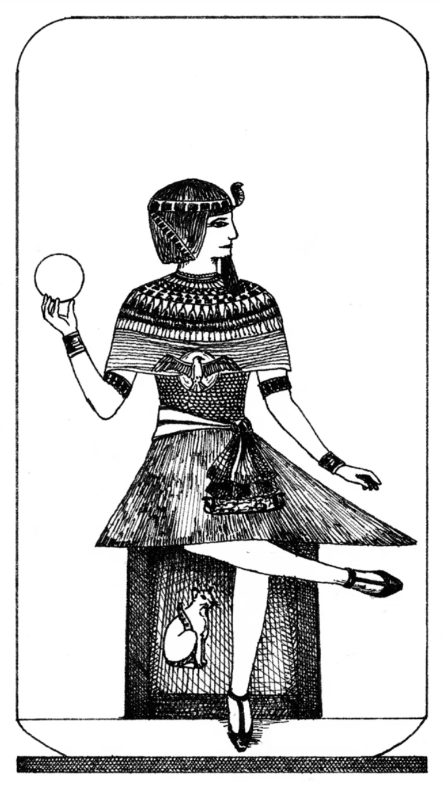
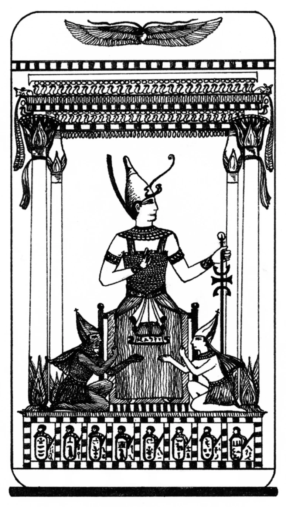
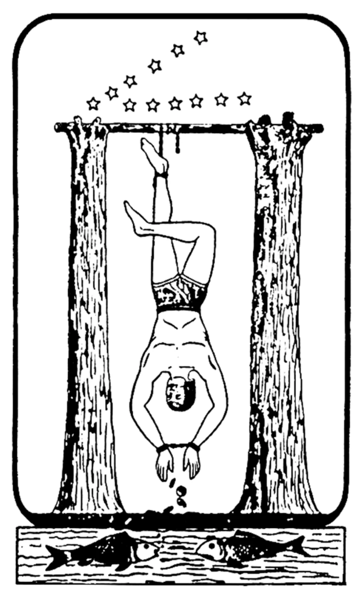
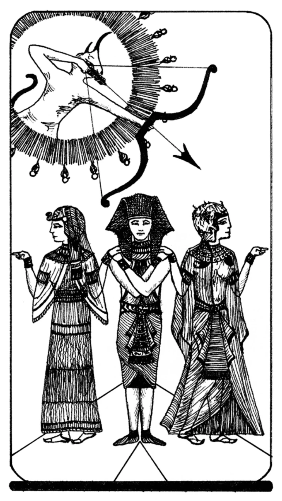
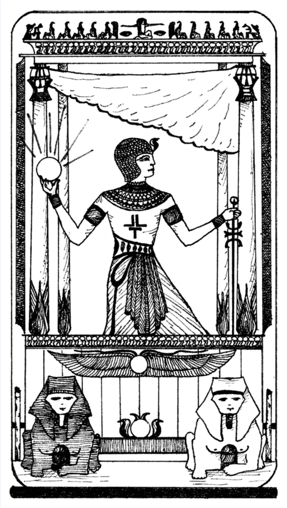
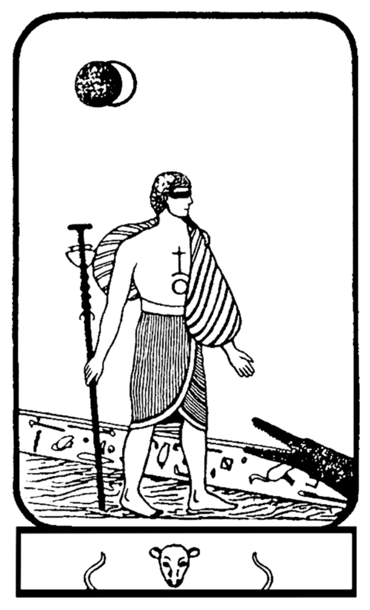

1
Matrix Of The Mind (The Magician)
Matrix Of The Mind (The Magician)

8
Matrix Of The Body (Justice or Balance)
Matrix Of The Body (Justice or Balance)

15
Matrix Of The Spirit (The Devil)
Matrix Of The Spirit (The Devil)

2
Potentiator Of The Mind (The High Priestess)
(Верховная жрица)
Potentiator Of The Mind (The High Priestess)
(Верховная жрица)

9
Potentiator Of The Body (Wisdom, or The Sage)
(Мудрость)
Potentiator Of The Body (Wisdom, or The Sage)
(Мудрость)

16
Potentiator Of The Spirit (Lightning Struck Tower)
(Молния ударившая в башню)
Potentiator Of The Spirit (Lightning Struck Tower)
(Молния ударившая в башню)

3
Catalyst Of The Mind (The Empress)
(Катализатор Разума)
Catalyst Of The Mind (The Empress)
(Катализатор Разума)

10
Catalyst Of The Body (Wheel of Fortune)
(Катализатор Тела)
Catalyst Of The Body (Wheel of Fortune)
(Катализатор Тела)

17
Catalyst Of The Spirit (Faith, The Star)
(Катализатор Духа)
Catalyst Of The Spirit (Faith, The Star)
(Катализатор Духа)

4
Experience Of The Mind (The Emperor)
(Опыт Разума)
Experience Of The Mind (The Emperor)
(Опыт Разума)

11
Experience Of The Body (The Enchantress)
(Опыт Тела)
Experience Of The Body (The Enchantress)
(Опыт Тела)

18
Experience Of The Spirit (The Moon)
(Опыт Духа)
Experience Of The Spirit (The Moon)
(Опыт Духа)

5
Significator Of The Mind (The Hierophant)
(Сигнификатор Разума)
Significator Of The Mind (The Hierophant)
(Сигнификатор Разума)

12
Significator Of The Body (The Martyr)
(Сигнификатор Тела)
Significator Of The Body (The Martyr)
(Сигнификатор Тела)

19
Significator Of The Spirit (The Sun)
(Сигнификатор Духа)
Significator Of The Spirit (The Sun)
(Сигнификатор Духа)

6
Transformation Of The Mind (The Two Paths)
(Трансформация Разума)
Transformation Of The Mind (The Two Paths)
(Трансформация Разума)

13
Transformation Of The Body (Death)
(Трансформация Тела)
Transformation Of The Body (Death)
(Трансформация Тела)

20
Transformation Of The Spirit (Awakening, Judgment)
(Трансформация Духа)
Transformation Of The Spirit (Awakening, Judgment)
(Трансформация Духа)

7
Great Way Of The Mind (The Chariot)
(Великий Путь Разума)
Great Way Of The Mind (The Chariot)
(Великий Путь Разума)

14
Great Way Of The Body (The Alchemist)
(Великий Путь Тела)
Great Way Of The Body (The Alchemist)
(Великий Путь Тела)

21
Great Way Of The Spirit (The Adept, The World)
(Великий Путь Духа)
Great Way Of The Spirit (The Adept, The World)
(Великий Путь Духа)

22
The Choice (The Fool)
(Выбор)
The Choice (The Fool)
(Выбор)
